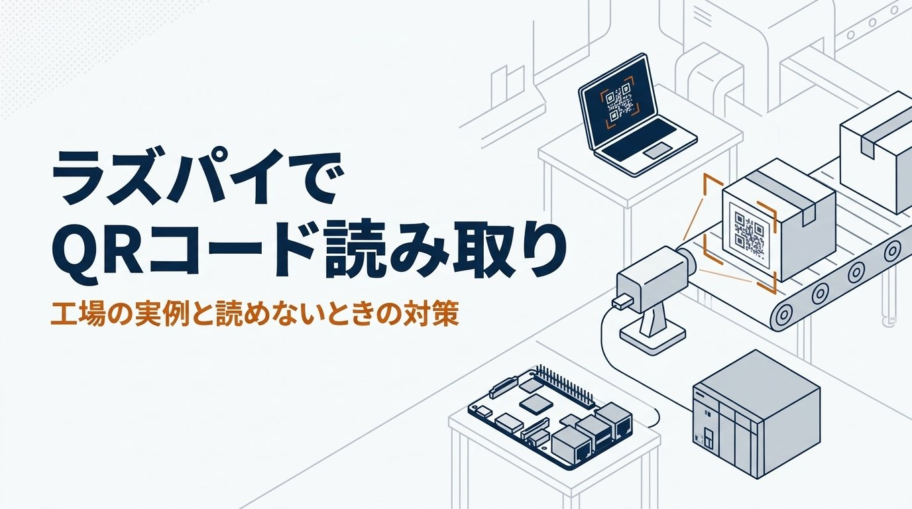
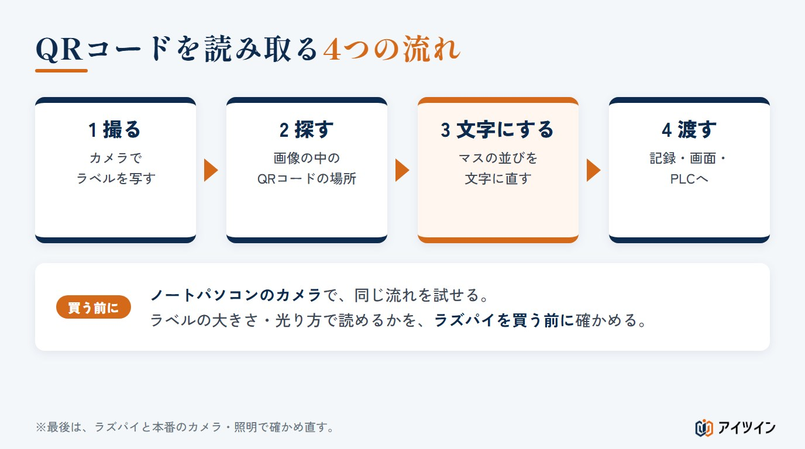
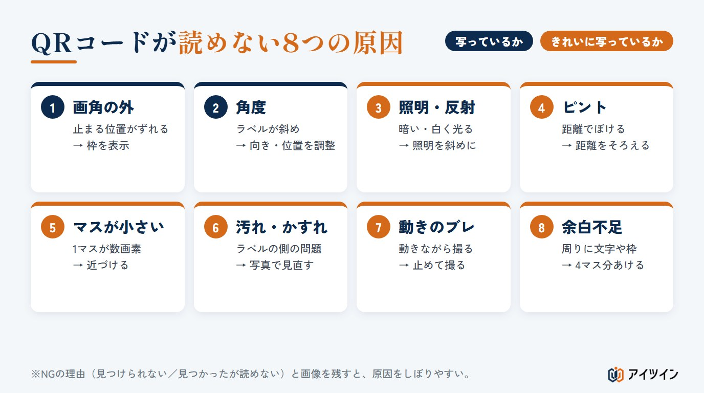
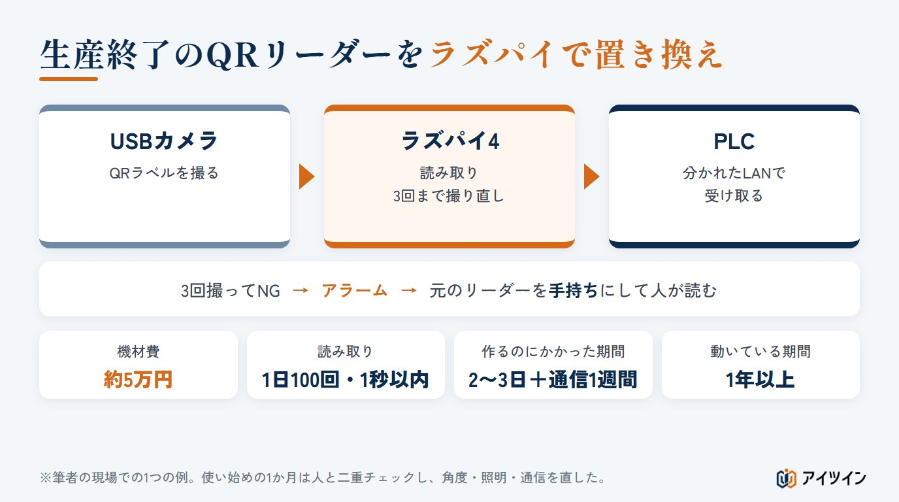

「ラズパイとカメラでQRコードを読めると聞いたが、工場で使えるほど安定するのか」「読めなかったとき、どこが悪いのか分からない」。QRコードの読み取りは、ラズパイで作れる仕組みの中でも身近なものですが、試しに動かすのと、毎日の生産で使い続けるのとでは、必要なことが大きく違います。
本記事では、ラズパイでQRコードを読み取る方法を、仕組み、必要なもの、ラズパイを買う前にノートパソコンのカメラで試す方法、AIに頼んで作る手順の順に整理します。読めないときの原因と対策、そのラベルが読めそうかを確かめるツールも付けました。後半では、生産終了したQRリーダーを、ラズパイ4とUSBカメラで置き換えて1年以上使っている実例をご紹介します。
この記事でわかること
- ラズパイでQRコードを読み取る仕組みと、必要なもの・費用
- ラズパイを買う前に、ノートパソコンのカメラで試して準備する方法
- AIに頼んで作るときのコツ｜人が判断できる情報を出させる
- 読めない8つの原因と対策、そのラベルが読めそうかの目安（ツールつき）
- 生産終了したQRリーダーを置き換えた実例と、工場で使うときの注意
ラズパイでQRコードを読み取る仕組み

撮る・探す・文字にする、の3段階
ラズパイでQRコードを読む仕組みは、3つの段階に分かれます。カメラで製品のラベルを撮り、画像の中からQRコードの場所を探し、白と黒のマスの並びを文字に直す。読み取りの部分は、Pythonで使える読み取り用の部品（ライブラリ）が受け持つため、自分で一から作る必要はありません。読み取った文字は、画面に出す、記録に残す、PLCへ送る、といった形で使います。
専用のリーダーとの違い
市販のQRリーダーは、照明やピントの調整、読み取りの速さが最初から作り込まれています。ラズパイで作る場合は、そうした部分を自分で合わせる代わりに、機材を安く構成できる場合があり、読んだ結果をどう使うかを自由に決められます。ただし、照明や取り付けの部品、作る時間、保守と故障したときの備えまで含めると、いつも市販品より安くなるとは限りません。安く作れる可能性がある代わりに、読み取りの安定と故障への備えは自分で作り込む、という違いです。
必要なものと費用の目安
必要なのは、ラズパイ本体、カメラ（USBカメラか、ラズパイ用のカメラ）、電源、記録用のSDカード、そして多くの場合は照明です。ほかに、カメラを固定する金具、ラズパイのケース、LANケーブルなども要ります。ラベルを照らす小さな照明があるだけで、読み取りの安定は大きく変わります。後半の実例では、ラズパイ4とUSBカメラなどの機材費が、筆者の概算で約5万円でした。
この章のまとめ
- 撮る・探す・文字にするの3段階。読み取りの部分は既存の部品を使える
- 市販品より安い代わりに、照明やピントなどの安定は自分で作り込む
- 本体・カメラ・電源・SDカードに加えて、照明があると安定する
ラズパイを買う前に、ノートパソコンのカメラで試す
読み取りの流れは、ノートパソコンでも同じ
QRコードの読み取りは、Pythonが動くパソコンなら同じ流れで試せます。ノートパソコンに付いているカメラで、開発の準備はできます。ラズパイを買う前に、手持ちのパソコンで「この大きさのラベルが読めるか」「どれくらいの時間で読めるか」を確かめておけば、ラズパイが届いてからは、置き場所と配線に集中できます。
買う前の確かめにも使える
実物のラベルをノートパソコンのカメラにかざして、読めるかどうかを試します。小さすぎて読めない、光って読めない、といったことが分かれば、カメラの選び方や照明の要否を、買う前に決められます。社内で「ラズパイで本当にできるのか」を説明するときも、実際に読めている画面を見せられます。
試すときに確かめる3つのこと
ノートパソコンで試すときは、ただ読めたかどうかだけでなく、次の3つを記録しておくと、あとの設計に役立ちます。
- どの距離まで読めるか：近づけたとき、離したときに、どこまで読めるか
- どの角度まで読めるか：ラベルを傾けたとき、何度くらいまで読めるか
- 1回に何秒かかるか：撮ってから文字が出るまでの時間
この3つが分かれば、ラズパイを置く場所と、カメラに写す範囲の目安が決まります。
ラズパイに移すときに変わること
ノートパソコンで動いたものをラズパイに移すと、処理の速さやカメラの扱いが少し変わります。最初から「最後はラズパイ4で動かす」とAIに伝えておくと、移すときの手直しが少なくて済みます。また、ノートパソコンのカメラは、画素数やピント、明るさの合わせ方が、工場で使うカメラとは違います。最後は、本番のラズパイ・カメラ・照明・取り付け位置で確かめ直します。
この章のまとめ
- ノートパソコンのカメラで、開発の準備と読み取りの確かめができる
- 買う前に、ラベルの大きさや光り方で読めるかを確かめられる
- 最後はラズパイと本番のカメラ・照明で確かめ直す
AIに頼んで作る手順と、作るときのコツ
筆者は、プログラムを書いたことがありません。QRコードの読み取りも、AIに頼んで作りました。頼み方の型は、特集の記事「製造業の生成AIプロンプト例10選」と同じで、何をしたいか・どうしたいか・何がいるかを分けて伝えます。
まずは読み取りだけを動かす
プロンプト例1｜読み取りだけを動かす
あなたは、ラズパイとPythonで製造現場の小さな仕組みを作るのを手伝うエンジニアです。 【何をしたいか】製品に貼ったQRラベルを、カメラで読み取りたい。 【どうしたいか】まずはノートパソコンのカメラで、読んだ文字を画面に出すところまで動かしたい。最後はラズパイ4とUSBカメラで動かす予定です。 【確かめ方】読めなかったときは、読めなかったと分かるようにしてほしい。 私はプログラムを書いたことがありません。準備から1つずつ、手順を教えてください。
ワンポイント｜人が判断できる情報を出させる
AIで作るときのいちばんのコツは、読めたかどうかだけでなく、人が判断するための情報を画面と記録に出させることです。読めなかったときに「読めませんでした」としか出ないと、カメラの向きが悪いのか、ピントなのか、光なのかが分かりません。筆者は、次のような情報を出すように頼んでいました。
- 読み込んだ順番と時刻：何番目の製品を、いつ読んだかを、番号つきで記録に残す
- NGの理由：QRコードを見つけられなかったのか、見つかったが文字にできなかったのかを分けて出す
- NGのときの画像：読めなかったときの画像を保存し、あとで人が見られるようにする
- 見つけた場所の枠：画面の上で、QRコードを見つけた所に枠を表示する
- 処理にかかった時間：1回の撮影から読み取りまでに何秒かかったかを出す
- 撮り直しの回数と、PLCへ送った結果：何回目で読めたか、送れたか・返事がなかったか
プロンプト例2｜人が判断できる情報を出させる
読み取りの仕組みに、次の情報を画面と記録の両方に出す働きを足してください。 ・読み込んだ順番（通し番号）と時刻 ・NGのときの理由（QRコードを見つけられない／見つかったが読めない、を分ける）と、そのときの画像の保存 ・画面の上で、QRコードを見つけた所に枠を表示する ・1回の撮影から読み取りまでにかかった時間 ・何回目の撮影で読めたか ・読み取った文字（読めたとき） 記録は、あとで表計算ソフトで開ける形にしてください。
こうした情報があると、二重チェックの期間に「読めなかったのは、いつも同じ向きのときだ」「午後になると時間が延びる」といった傾向に気づけます。ただし、プログラムが分けられるのは「見つけられなかった」か「読めなかった」かまでで、ピント・照明・反射のどれが原因かは、保存した画像を人が見て判断します。AIに直し方を相談するときも、記録と画像をもとに条件を整理して伝えられます。AIの提案は、実機で確かめてから使います。
読めたら、撮り直しと渡し先を足す
読み取りが安定したら、「読めないときは何回まで撮り直すか」「読めた文字をどこへ渡すか」を足していきます。一度に全部を作らず、1つずつ足して確かめるのが、AIで作るときの進め方です。
プロンプト例3｜撮り直しと、読めないときの動きを足す
読めなかったときは、自動で撮り直す働きを足してください。 ・撮り直しは合計3回まで。3回とも読めなければ、アラームを出して作業者に知らせる ・読めなかったときは、前の製品の文字を使い回さない ・撮り直しを含めて、1台あたり1秒以内に収めたい。かかった時間も記録に残す ・読み取った文字が、決めた桁数と形になっているかを確かめてから渡す PLCへ送る働きは、このあと別に相談します。
この章のまとめ
- まずはノートパソコンのカメラで、読み取りだけを動かす
- 順番・NGの理由・枠・処理時間など、人が判断できる情報を出させる
- 撮り直しや渡し先は、読み取りが安定してから1つずつ足す
読めない8つの原因と対策

原因1・2：画角に入っていない、角度がついている
製品の止まる位置がずれると、QRコードが画面の端からはみ出します。また、ラベルが斜めを向いていると、読み取りにくくなります。画面に枠を表示しておくと、どこに写っているかがすぐ分かり、カメラの向きや、製品を止める位置の調整がしやすくなります。
原因3：照明と反射
暗いとマスの境目がぼやけ、光沢のあるラベルや透明なフィルムの上からでは、照明が白く反射して読めなくなります。照明の向きを斜めにずらす、光を和らげる、周りの窓や天井の照明の影響を受けない向きにする、といった調整が効きます。
原因4・5：ピントと、マスの小ささ
カメラとラベルの距離が変わるとピントがずれます。また、写る範囲に対してQRコードが小さすぎると、1つのマスが画像の上で数画素にしかならず、読み取れません。下のツールで、1マスが何画素に写るかの目安を確かめられます。
原因6：ラベルの汚れ・しわ・かすれ
油や粉で汚れたラベル、しわの寄ったラベル、印刷がかすれたラベルは、カメラの調整では直せないことがあります。読めないラベルの写真を記録に残しておけば、ラベルの貼り方や印刷の見直しにもつなげられます。
対策を試すときは、一度に変えるのは1つだけにします。照明とカメラの角度を同時に変えると、どちらが効いたのか分からなくなります。変えたこととその日の読み取りの結果を記録に並べておくと、あとから振り返れます。
原因7・8：動きによるブレと、周りの余白不足
製品が動いているうちに撮ると、シャッターが開いている間に製品が進み、マスの境目が流れて読めなくなります。製品を止めて撮るか、動きに合わせてシャッターの時間を短くし、照明で明るさを補います。また、QRコードの周りには、1マスの幅の4倍ほどの何も印刷しない余白が要ります。ラベルの端に寄りすぎていたり、周りに文字や枠が重なっていたりすると、見つけにくくなります。
このラベルは読めそうか｜1マスの画素数の目安ツール
QRコード本体の大きさ（周りの余白は含めない）、カメラに写る範囲の幅、カメラの画素数から、1マスが画像の上で何画素になるかを計算します。画素数が足りていても、ピントや照明、ブレで読めないことはあるため、事前の目安として使ってください。撮り直しを含めた時間が、設備の待てる時間に収まるかも確かめられます。はじめは、15mmのQRコード（25マス）を、幅100mmの範囲・横1280画素で写し、1回0.3秒・3回まで撮る例です。
このQRコードは読めそうか｜1マスの画素数と、撮り直しの時間の目安ツール
QRコードは、白と黒の小さなマスの集まりです。カメラの画像の上で1マスが何画素（ドット）に写るかが、読み取りやすさの目安になります。QRコード本体の大きさ（周りの余白は含めない）、カメラに写る範囲の幅、カメラの横の画素数から計算します。判定の線（2.5画素・4画素）は事前の確かめのための目安で、画素数が足りていても読めるとは限りません。ピント・照明・反射・ブレ・ラベルの印刷の質で結果は変わります。時間は撮影と読み取りだけで、PLCへ送って返事を待つ時間は含みません。最後は、実物のラベルを本番のカメラと照明で撮り、時間も実測して確かめてください。
QRコードのマスの数（一辺。入れる文字が多いほど増える。21マスがバージョン1、25マスがバージョン2）
カメラの横の画素数
読めないときの撮り直し（合計の撮影回数）
結果
| 1マスの大きさ | mm |
|---|---|
| 画像の1画素の大きさ | mm |
| 1マスの画素数 | 画素 |
| 撮り直しまでの合計の時間 | 秒 |
この章のまとめ
- まず画角と角度、次に照明・反射・ピント・ブレを疑う
- 1マスが何画素に写るかで、読めそうかの目安がつく
- 汚れ・かすれ・余白不足は、ラベルの側の見直しにつなげる
実例｜生産終了したQRリーダーを、ラズパイ4とUSBカメラで置き換えた
ここからは、筆者が保全の現場で実際に作り、使ってきた仕組みの例です。

背景と構成｜約5万円で、新しいリーダーの代わりに
設備で使っていたQRリーダーが生産終了になり、新しいリーダーにすると数十万円かかることが分かりました。そこで、ラズパイ4とUSBカメラで製品のQRラベルを読み、読んだ文字をLANでPLCへ送る仕組みを作りました。元のリーダーは、もともと設備のネットワークとは分かれた線でつながっていたため、そのLANの線をそのまま使いました。ただし、通信の方式は元のリーダーと同じではないため、PLC側の設定は変えています（次の項目）。機材費は筆者の概算で約5万円です。読み取りは1日に約100回で、1回の読み取りは1秒以内に収まっています。
読めないときは3回撮り、だめなら手持ちのリーダーで
1回で読めなかったときは、自動で撮り直します。3回撮っても読めなければアラームを出し、作業者が手持ちのリーダーで読み取ります。手持ちのリーダーには、置き換える前に使っていた元のリーダーを回しました。読めないときに、生産を止めずに人が代わりに読める道を用意しておくことが、現場で使い続けるための条件です。
時間がかかったのは、PLCとの通信
QRコードを読む部分は、AIを使って2〜3日で動きました。時間がかかったのは、PLCとの通信を確立する所で、約1週間かかりました。PLC側は、ラズパイから受け取れるように通信の設定を変えています。読み取りより、設備とつなぐ所に時間がかかるのは、特集の別の記事「制御盤の熱対策」の実例と同じ傾向です。
1か月の二重チェックで、角度・照明・通信を直した
使い始めの1か月は、人と二重にチェックしました。その間に、読み取りNGが出たときは、カメラの角度や照明の位置を調整して減らしました。また、PLCとの通信がうまくいかないこともあり、その対策も入れました。二重チェックで出た問題を1つずつ直したうえで、本番の運用に移り、1年以上動き続けています。なお、ここに書いた費用・回数・時間は筆者の現場での1つの例で、どのラズパイでも同じ性能が出るという意味ではありません。
この章のまとめ
- 新しいリーダーなら数十万円のところを、約5万円の機材で置き換えた
- 3回撮ってNGならアラーム、元のリーダーを手持ちにして人が読む
- 読み取りは2〜3日、PLCとの通信は約1週間。二重チェックで角度・照明・通信を直した
工場で使うときの4つの注意
注意1：読めないときに、前の値を使い回さない
読み取りに失敗したとき、前の製品の文字が残ったまま次の工程に進むと、製品の取り違えにつながります。読み取りを始めるたびに前の値を消し、読めなかったときは、はっきり「読めない」としてPLCに知らせ、古い値を送らないようにします。読めた文字も、桁数や形が決めたとおりかを確かめてから渡します。同じ文字を続けて読んだときに、同じ製品の読み直しなのか、別の製品の重なりなのかを見分ける決まりも作っておきます。
注意2：PLCとの通信が切れたときの動きを決める
実例でも、PLCとの通信の不具合がありました。PLCとの通信は、PLCの種類によって方式が違い、LANでつなぐだけでは動きません。通信の方式、IPアドレスとポート、送る文字の形、PLC側で受け取る場所、待つ時間（タイムアウト）を、設備の担当者と確かめます。送ったあとはPLC側が受け取ったことを確かめてから、次の製品を読むようにします。返事が来ないからと無条件に送り直すと二重に処理されることがあるため、通し番号などで重なりを見分けます。ネットワークは設備のネットワークとは分け、つなぎ方は図で確かめます。
注意3：安全に関わる働きはさせない
ラズパイは、QRコードを読んで文字を渡すだけにします。非常停止や安全扉のインターロックなど、安全に関わる働きは、機械の危険を見積もったうえで作られた安全のための回路や機器（安全リレーや安全用のPLCなど）が受け持ちます。ラズパイを、その代わりに使うことはしません。
注意4：止まったときに、すぐ人の手に戻せるようにする
ラズパイは、PLCのような産業用の機器ではなく、小さなコンピューターです。使える周りの温度は0〜50℃とされており、ほこりや油、電源の瞬断、SDカードへの書き込みすぎ、カメラやLANの線の抜けにも気を配ります。電源が戻ったら自動で動き出すようにし、止まったときは、実例のように手持ちのリーダーで読む手順に、すぐ切り替えられるようにしておきます。二重チェックの期間には、汚れたラベル、傾いたラベル、通信が切れたとき、再起動したとき、カメラが認識されないときも試しておきます。
この章のまとめ
- 読めないときは「読めない」と知らせ、前の値を使い回さない。文字の形も確かめる
- 通信の方式・受け取りの確認・送り直しの決まりを、設備の担当者と決める
- 安全の働きは安全のための回路に任せ、止まったら人の手に戻せるようにする
アイツインの仕組みづくりの支援
アイツインは、保全の現場での経験をもとに、製造現場の困りごとを、ラズパイとAIで安く解決するお手伝いをしています。
読めるかどうかの確かめから
実物のラベルと置き場所をうかがい、ノートパソコンのカメラでの試しから、読めるかどうか、市販のリーダーを選ぶべきかを一緒に判断します。読み取る回数や速さ、ラベルの状態によっては、市販のリーダーのほうが安心な場合もあるため、作らないほうがよいときは、その理由もお伝えします。
試作から、PLCとのつなぎ方、二重チェックまで
読み取りの仕組みを試作し、PLCとのつなぎ方を設備の担当の方と確かめ、使い始めの二重チェックと、読めないときの手順書づくりまでを支援します。
社内で直せる人を育てる
「作った人しか直せない」状態を避けるために、社内の方がAIを使って直せるようになるための研修もご相談いただけます。
まとめ
ラズパイでQRコードを読み取る仕組みは、撮る・探す・文字にするの3段階で、ラズパイを買う前でもノートパソコンのカメラで試せます。AIで作るときは、読めたかどうかだけでなく、読み込んだ順番、NGの理由、見つけた場所の枠、処理時間など、人が判断できる情報を出させることが、安定させる近道です。
工場で使い続けるには、読めないときの撮り直しと人の手での読み取り、PLCとの通信が切れたときの動き、前の値を使い回さないこと、二重チェックまでを用意します。生産終了で困っているリーダーがあれば、まずは手持ちのノートパソコンで、そのラベルが読めるかを試すところから始めてみてください。
参考
・本記事の費用・時間・回数は、筆者の現場での1つの例です。ラベルの質、距離、照明、読むときに製品が止まっているかで結果は変わります。
・1マスの画素数の判定の線は目安です。実物のラベルを、本番のカメラと照明で確かめてください。
・QRコードの周りの余白（1マスの4倍ほど）は、QRコードの規格と、流通の業界団体の資料にもとづきます。